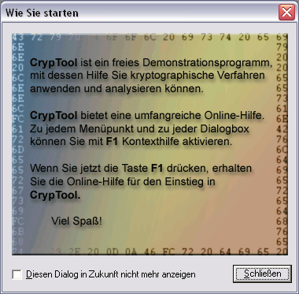

Die Default-Einstellungen für einige in CrypTool benutzte Optionen, die eine Sitzung überdauern sollen (Persistenz), werden in der Windows-Registry abgespeichert.
Wenn Sie CrypTool zum ersten Mal aufrufen, erscheint der Dialog Wie Sie starten. Wenn Sie diesen Dialog zukünftig nicht mehr sehen wollen, können Sie die Checkbox Diesen Dialog in Zukunft nicht mehr anzeigen benutzen. Dadurch wird in der Registry die Variable NoTipps auf null gesetzt, sodass der Dialog beim Starten nicht mehr angezeigt wird.

Im Folgenden wird beschrieben, wie Sie auf die Windows-Registry zugreifen können. Danach werden die darin gespeicherten CrypTool-Parameter kurz erklärt.
Zugriff auf die Windows-Registry
Bitte beachten Sie: Die Windows-Registry enthält kritische Informationen, deren Änderung zu Instabilitäten des Betriebssystems oder von Anwendungen führen kann.
Zur Windows-Registry gelangen Sie mit Hilfe des DOS-Kommandos regedit.exe. Zu den CrypTool-Einstellungen gelangen Sie über den folgenden Pfad:
HKEY_CURRENT_USER\Software\CrypTool\Settings
Die oben genannte Registry-Variable NoTipps finden Sie unter Options\StartingOptions. Den Wert der Variablen können Sie mit der rechten Maustaste verändern (sinnvoll sind nur die Werte 1 und 0, für Anzeigen beziehungsweise Nicht-Anzeigen).
Nachfolgend werden die von CrypTool definierten Registry-Variablen aufgeführt und deren Default-Einstellungen und Wertebereiche beschrieben:
1. Hill-Verschlüsselungsverfahren
OrdChrOffset (0 oder 1, Default = 0):
PaddingDefaultChr (0 oder 1, Default = 1):
PaddingOwnChr (ein ASCII-Zeichen, nur berücksichtigt für PaddingDefaultChr = 1):
Verwendet das vom Benutzer eingegebene Alphabetzeichen zum Auffüllen (Padding) des Hill-Klartextes
vor der eigentlichen Hill-Verschlüsselung.
EditKeyChrMatrix (0 oder 1, Default = 1):
2. Diffie-Hellman-Schlüsselaustauschverfahren
ShowIntro (0 oder 1, Default = 1):
ShowInfo (0 oder 1, Default = 1):
3. Angriff auf den Hashwert der digitalen Signatur
HashAlgorithmID (0 bis 5, Default = 0):
SignificantBitLength (1 bis Bitlänge der selektierten Hashfunktion):
Anzahl der Bits, die im Anschluss an eine Kollisionssuche bei den Hashwerten unterschiedlicher
Dokumente übereinstimmen sollen.
ModificationMethod (0 oder 1, Default = 1):
ModifyBlankEOL (0 oder 1, Default = 1, nur relevant wenn ModificationMethod = 0):
ModifyDoubleBlank (0 oder 1, Default = 1, nur relevant wenn ModificationMethod = 0):
ModifyCharSet (0 oder 1, Default = 0, nur relevant wenn ModificationMethod = 1):
HarmlessFile (Dateipfad, Default = %cryptool%\Original.txt):
Dateipfad des harmlosen Dokuments.
DangerousFile (Dateipfad, Default = %cryptool%\Faelschung.txt):
Dateipfad des gefährlichen Dokuments.
PerformTestRun (0 oder 1, Default = 0, nur in der Registry änderbar):
Wenn Testreihen ausgeführt werden sollen, dann sind noch folgende Variablen relevant:
MinimumLength (Zahl, Default = 8): Minimale Passwortlänge.
MinimumDigits (Zahl, Default = 1): Minimalzahl der Ziffern im Passwort.
MinimumSpecial (Zahl, Default = 1): Minimalzahl der Sonderzeichen im Passwort.
SpecialGroup (Zeichenkette, Default = ^°!"§$%&/()=?´`\<>|,;:.-_#'+*~@): Zeichensatz der Sonderzeichen.
GenerateBytes (Zahl, Default = 2500): Länge der Zufallsausgabe in Bytes.
ShowInternalRandState (0 oder 1, Default = 0):
RandSeed (Zeichenkette, Default = 314159): Saat für die Initialisierung der Pseudozufallsgeneratoren.
SelGenerator (Zahl zwischen 0 und 3, Default = 0):
Pseudozufallsgenerator-spezifische Parameter
ShowIntro (0 oder 1, Default = 1):
7. Seitenkanalangriff auf "Textbook-RSA"
BitlengthSecret (Zahl, Default = 128): Bitlänge des RSA-verschlüsselten Geheimnisses.
Keyword (Zeichenkette, Default = Alice): Schlüsselwort, durch das eine korrekte Entschlüsselung identifiziert wird.
8. Verschlüsselung durch Permutation
ShowPermutationKey (0 oder 1, Default = 1):
ShowIntro (0 oder 1, Default = 1):
ShowIntro (0 oder 1, Default = 1):
NoTipps (0 oder 1, Default = 1):
SampleTextFile (0 oder 1, Default = 1):
Bemerkung 1: Textoptionen
Die im Dialog Textoptionen gemachten
Einstellungen (z.B. das Alphabet) werden nicht in der Registry gespeichert.
Bemerkung 2: Interner Schlüsselspeicher
Der Inhalt des internen Schlüsselspeichers
wird nicht in der Registry abgelegt.
Bemerkung 3: Optionen in den Schlüsseleingabe-Dialogen und den Visualisierungen
Die eingestellten Optionen (wie Anzeige Begrüßungsdialog) werden
(meist) in der Registry gespeichert.